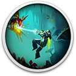

 Hive Jump 2: Survivors
Details
 |
|
| Playtime | Not Played |
| Last Activity | Never |
| Added | 11/10/2024 15:58:37 |
| Modified | 17/05/2025 23:25:59 |
| Completion Status | Not Played |
| Library | Gog |
| Source | GOG |
| Platform | PC (Windows) |
| Release Date | 10/09/2024 |
| Community Score | 80 |
| Critic Score | 76 |
| User Score | |
| Genre | Indie Role-playing (RPG) |
| Developer | Graphite Lab Joystick Sonamu Games |
| Publisher | Midwest Games |
| Feature | Single Player |
| Links | Steam Official Itch Twitch GOG |
| Tag | 2D Action Bullet Hell Casual Combat Indie Pixel Graphics Roguelike Roguelite Sci-fi Shooter Space Survival Top-Down Twin Stick Shooter |
Description
Hive Jump 2: Survivors is a sci-fi, action-packed, bullet heaven roguelike. After a squad of intrepid jetpack Jumpers are decimated in an intergalactic ambush, a lone survivor sets out for vengeance while fending off endless waves of killer insects. Play as different Jumpers for unique builds and abilities. Collect amber and alien goo as precious resources to earn upgrades and mow down the hordes however you see fit. Your secret weapon? Jetpacks! Strap in, dodge incoming hordes, maneuver around obstacles, and fry the enemies below - one gory run at a time!
Fight through four unique biomes: Crystal Caverns, Frozen Tundra, and the recently added Volcanic Wasteland, and the upcoming Mushroom Forest on September 10th.
With 19 Jumpers to choose from each with their own stats, weapons, and abilities play the way you want and customize each run.

Key Features
- Jumping Jetpacks - Utilize your jetpack to dodge enemies and traverse the environment and of course damage enemies!
- Auto and Manual Aiming - Auto-fire at enemies to focus on movement, or take aim to better control the chaos.
- Multiple Jumpers, Multiple Ways to Kill - With multiple options, each Jumper has distinct stats that impact speed, rate of fire, health, and more.
- Customize Your Jumper - Earn weapons, upgrades, and augments, like automatic enemy targeting and increased health reserves, to create the ultimate soldier.
- HSA Store - Convert your enemies’ guts into currency, exchanging “goo” for weapons, utilities, and relics of varying rarity. Snag precious Amber to boost builds with permanent upgrades.
- Permanent Upgrades - Unlock permanent abilities to give your Jumper an advantage from the start of every run.